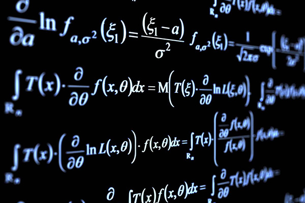

Mathematics was used before the modern age (about 3000 BC), and the worldwide spread of knowledge. Written examples of new mathematical developments have come to light only in a few locales.
Mathematics is a broad discipline that encompasses various branches, each with its own focus and applications. Some of the main branches of mathematics include: arithmetic, algebra, geometry, trigonometry, calculus, statistics, probability, and number theory
